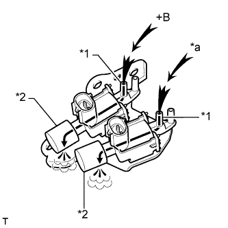
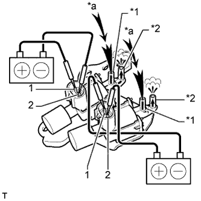

ВПУСКНОЙ КОЛЛЕКТОР (для моделей без DPF) > ПРОВЕРКА |
| 1. ПРОВЕРЬТЕ ВПУСКНОЙ КОЛЛЕКТОР |
Отсоедините 2 вакуумных шланга от привода.
Проверьте работу клапана регулирования всасывания.
Убедитесь, что в нормальных условиях клапан полностью открыт.
Подсоедините вакуумные насосы, как показано на рисунке. В первую очередь создайте отрицательное давление на мембране рядом с впускным коллектором. Это вызовет перемещение штока привода, изменяющего положение клапана регулирования всасывания. Затем создайте отрицательное давление на мембране с наружной стороны. Это вызовет дальнейшее перемещение штока привода, который еще дальше переместит клапан регулирования всасывания. Убедитесь, что клапан полностью закрывается при отрицательном давлении 65 кПа (488 мм рт.ст., 19,2 дюйма рт.ст.).
Подождите 1 мин и убедитесь, что игла вакуумного насоса не перемещается. Если результат не соответствует заданному, замените впускной коллектор.
| 2. ПРОВЕРЬТЕ ЭЛЕКТРОВАКУУМНЫЙ КЛАПАН (для клапана регулирования всасывания) |
Измерьте сопротивление в соответствии со значениями, приведенными в таблице ниже.
| Контакты для подключения диагностического прибора | Условие | Заданные условия |
| 1 - 2 | 20°C (68°F) | 33 - 39 Ом |
| 1 - масса | 20°C (68°F) | 1 МОм или более |
| 2 - масса |
Проверьте работу VSV.
|  |
Убедитесь, что воздух из канала Е поступает в фильтр.
| *1 | Канал E |
| *2 | Фильтр |
| *a | Воздух |
|  |
Подайте напряжение аккумуляторной батареи на контакты.
| *1 | Канал E |
| *2 | Канал F |
| *a | Воздух |
Убедитесь, что воздух из патрубка E поступает в патрубок F.
Если результат не отвечает требованиям, замените комплект электровакуумного клапана.